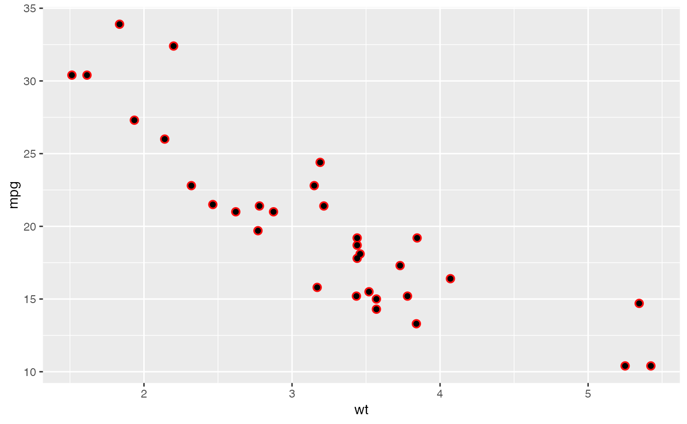

Use this set of scales when your data has already been scaled, i.e. it already represents aesthetic values that ggplot2 can handle directly. These scales will not produce a legend unless you also supply the `breaks`, `labels`, and type of `guide` you want.
Arguments
- ...
Other arguments passed on to [discrete_scale()] or [continuous_scale()]
- guide
Guide to use for this scale. Defaults to `"none"`.
- aesthetics
Character string or vector of character strings listing the name(s) of the aesthetic(s) that this scale works with. This can be useful, for example, to apply colour settings to the `colour` and `fill` aesthetics at the same time, via `aesthetics = c("colour", "fill")`.
Details
The functions `scale_colour_identity()`, `scale_fill_identity()`, `scale_size_identity()`, etc. work on the aesthetics specified in the scale name: `colour`, `fill`, `size`, etc. However, the functions `scale_colour_identity()` and `scale_fill_identity()` also have an optional `aesthetics` argument that can be used to define both `colour` and `fill` aesthetic mappings via a single function call. The functions `scale_discrete_identity()` and `scale_continuous_identity()` are generic scales that can work with any aesthetic or set of aesthetics provided via the `aesthetics` argument.
Examples
library( ggplot2 )
p <- ggplot(mtcars, aes(wt, mpg, shadowcolor='red'))
p + geom_shadowpoint() + scale_shadowcolour_identity()
